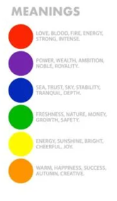
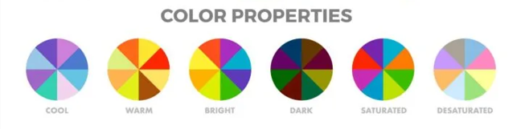
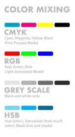
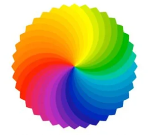

t2a12-color-zach
8 items about color design, use This Some reaserch, at least 8 images Another Link

Color Harmonies
ComplementaryTwo colors that are on opposite sides of the color wheel. This combination provides a high contrast and high impact color combination – together, these colors will appear brighter and more prominent.
Monochromatic
Three shades, tones and tints of one base color. Provides a subtle and conservative color combination. This is a versatile color combination that is easy to apply to design projects for a harmonious look.
Analogous
Three colors that are side by side on the color wheel. This color combination is versatile, but can be overwhelming. To balance an analogous color scheme, choose one dominant color, and use the others as accents.
Triadic
Three colors that are evenly spaced on the color wheel. This provides a high contrast color scheme, but less so than the complementary color combination — making it more versatile. This combination creates bold, vibrant color palettes.
Tetradic
Four colors that are evenly spaced on the color wheel. Tetradic color schemes are bold and work best if you let one color be dominant, and use the others as accents. The more colors you have in your palette, the more difficult it is to balance,

Color Meanings
Color meaning is a complex and fascinating field, often referred to as color psychology, which explores how various hues can influence human emotion, behavior, and perception. While some color meanings are believed to be biologically innate—such as red's association with arousal and attention—the vast majority are learned and heavily dependent on cultural context and personal experience. For instance, while red universally suggests passion, love, or danger in Western cultures, it symbolizes luck, joy, and celebration in China. Similarly, blue frequently conveys trust, serenity, and stability, making it a popular choice for corporate branding worldwide. Understanding the symbolism of color is crucial, as it impacts everything from marketing and design to emotional well-being and daily communication, demonstrating that colors are not merely visual stimuli but powerful nonverbal communicators.

Color Properties
Every perceivable color can be precisely described using three fundamental properties, which act as its three dimensions: hue, saturation (or chroma), and value (or brightness). Hue is the purest, defining characteristic of a color, essentially its name, such as red, blue, or yellow, and corresponds to the specific wavelength of light. Saturation refers to the intensity or purity of the color; a highly saturated color is vivid and rich, while a desaturated color appears dull or closer to gray. Finally, value (also known as lightness or brightness) measures how light or dark the color is, ranging from black (low value/darkness) to white (high value/lightness). By adjusting these three interdependent properties, artists, designers, and scientists can create and categorize the millions of distinct colors perceptible to the human eye

Color Mixing
Color mixing operates under two fundamental models: additive and subtractive. The additive model, used when combining colored light (like on a TV or computer screen), starts with black, and its primaries are Red, Green, and Blue (RGB). Adding these three lights together results in white light, and their pairwise combination creates the secondary colors: Cyan, Magenta, and Yellow. Conversely, the subtractive model, used for pigments (like paint and ink), starts with white (the paper or canvas) and involves the absorption of light wavelengths. Its true primaries are Cyan, Magenta, and Yellow (CMY), which are the secondary colors of the additive model. Mixing these three pigments theoretically yields black (by absorbing all light), and their pairwise mixing creates the additive primaries (Red, Green, and Blue), demonstrating a reciprocal relationship between the two systems that governs all visible color creation.

Color Wheel
There are two types of color wheel. The RYB or red, yellow, blue color wheel is typically used by artists, as it helps with combining paint colors. Then there is the RGB, or red, green and blue color wheel, which is designed for online use, as it refers to mixing light – like on a computer or TV screen.
Warm and Cold Colors
The color wheel can also be divided into warm and cool colors. The warmth or coolness of a color is also known as its color temperature. The color combinations found on a color wheel often have a balance of warm and cool colors. According to color psychology, different color temperatures evoke different feelings. For example, warm colors are said to bring to mind coziness and energy, while cool colors are associated with serenity and isolation. Warm colors are the colors from red through to yellow. These colors are said to bring to mind warmth, like the sun. Cool colors are the colors from blue to green and purple. These colors are said to bring to mind coolness, like water.
Shades, Tints, and Tones
ShadeA shade is created by adding black to a base hue, darkening the color. This creates a deeper, richer color. Shades can be quite dramatic and can be overpowering.
Tint
A tint is created by adding white to a base hue, lightening the color. This can make a color less intense, and is useful when balancing more vivid color combinations.
Tones
A tone is created by combining black and white—or grey—with a base hue. Like tints, tones are subtler versions of the original color. Tones are less likely to look pastel, and can reveal complexities not apparent in the base color.

Hue, Saturation, and Luminance
A hueis basically any color on the color wheel. When you are using a color wheel or a color picker, you can adjust the saturation and luminance of a hue.
Saturation
is the intensity or purity of the color.
Luminance
is the amount of brightness or light in a color.